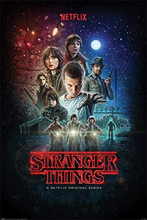

A Princess, an Elf and a Demon Walk into a Bar
Original release date, 17 August, 2018 directed by Dwayne Carey-Hill
Also on Netflix
Princess Tiabeanie "Bean" is the roughhousing princess of Dreamland who is destined to be married to Prince Guysbert, the son of the incestuous king and queen of Bentwood. While looking through her gifts, Bean receives a demon named Luci who was sent by two dark mages hoping to turn Bean to evil. Luci ends up being a fun-loving troublemaker who sympathizes with Bean's predicament as she feels that the marriage is simply so that her father, King Zøg, can be more powerful. Meanwhile, Elfo, an optimistic elf, is disillusioned with his candy making happy life and leaves the elf realm much to the consternation of his people. Elfo arrives just in time to witness Bean turn down Guysbert who unfortunately impales himself on a sword. Bean, Elfo, and Luci escape while Prince Merkimer, next in line to marry Bean, and his men chase after her. The group get directions by a fairy to see the Wishmaster, but he turns out to be the Washmaster instead. With everyone surrounding them, Bean takes Elfo and Luci and jump from a high cliff.
For Whom the Pig Oinks
Original release date, 17 August, 2018 directed by Frank Marino
Bean, Elfo, and Luci are "rescued" by Merkimer who takes them back to Dreamland. Elfo is taken in by Sorcerio who wants to use his blood to create more magic and so Zøg can gain the elixir of life. At Luci's suggestion, Bean approaches Merkimer with the idea of having a bachelor party before the marriage. She also discovers Zøg and Sorcerio's plan to drain Elfo of his blood so they use pig's blood to fool them. At the bachelor party, the entire crew travels to mermaid island in the hopes that Merkimer will be killed by the mermaids. He is instead taken in by walruses who save them from murderous Borcs, though they turn out to be the allied Bozaks. Bean ultimately loses hope; however, a thirsty Merkimer discovers the "elf blood" which is mostly pig's blood and Elfo convinces him to drink it transforming him into a pig. Bean, fed up, denounces the marriage and Zøg finally agrees with his daughter. This upsets the king of Bentwood and he and Zøg settle things in a fistfight with Bean, Elfo, and Luci happily watching.
The Princess of Darkness
Original release date, 17 August, 2018 directed by Wes Archer
Also on Netflix

While under the influence of Queen Oona's snake root, Bean, Elfo, and Luci run into a gang of gender aware thieves who convince Bean to join them. At Luci's urging, Bean breaks into her ancestors' resting place and steals their valuables, but the thieves betray them and they get caught. At the suggestion of Odval, Zøg's vizier, they decide to hire an exorcist named Big Jo to remove a demon from Bean, unaware of the fact that Luci, whom everyone thinks is a cat, is Bean's personal demon. Big Jo manages to seal away Luci and leaves. While Bean feels clean and at peace with herself, Elfo convinces her that they need to get Luci back and learn that he, along with several other demons will be tossed into a volcano. Bean and Elfo get back at the thieves by getting their valuables and manage to reach Big Jo who they end up dismembering and toss into the volcano. When they successfully free Luci, Elfo accidentally causes Big Jo's carriage to roll down the mountain which crashes and frees all the other demons into the world.